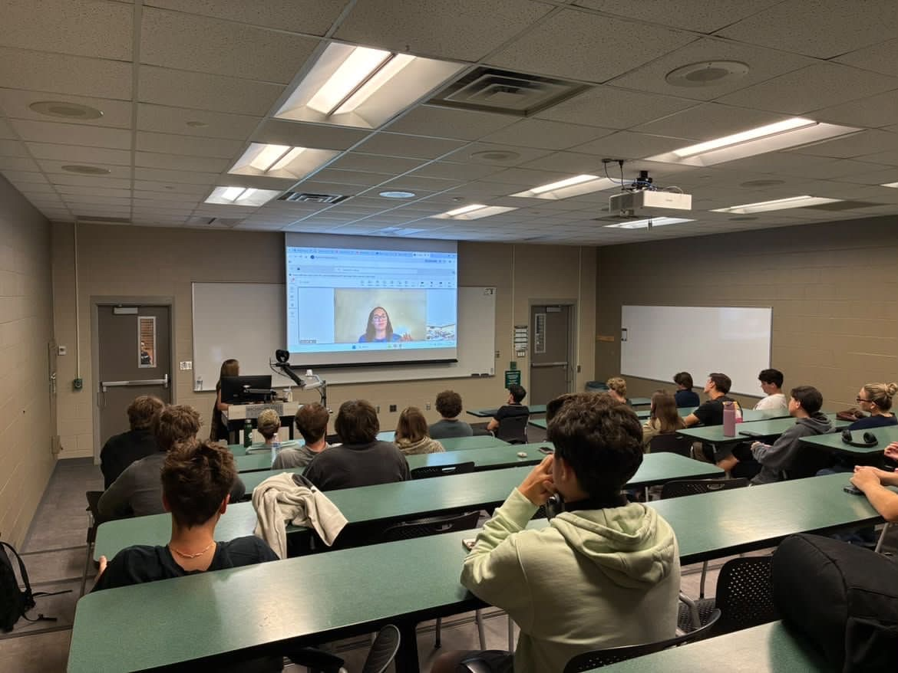
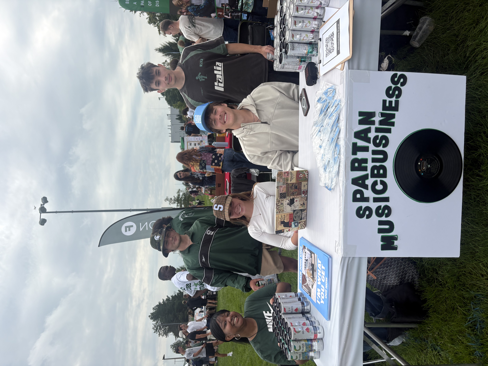
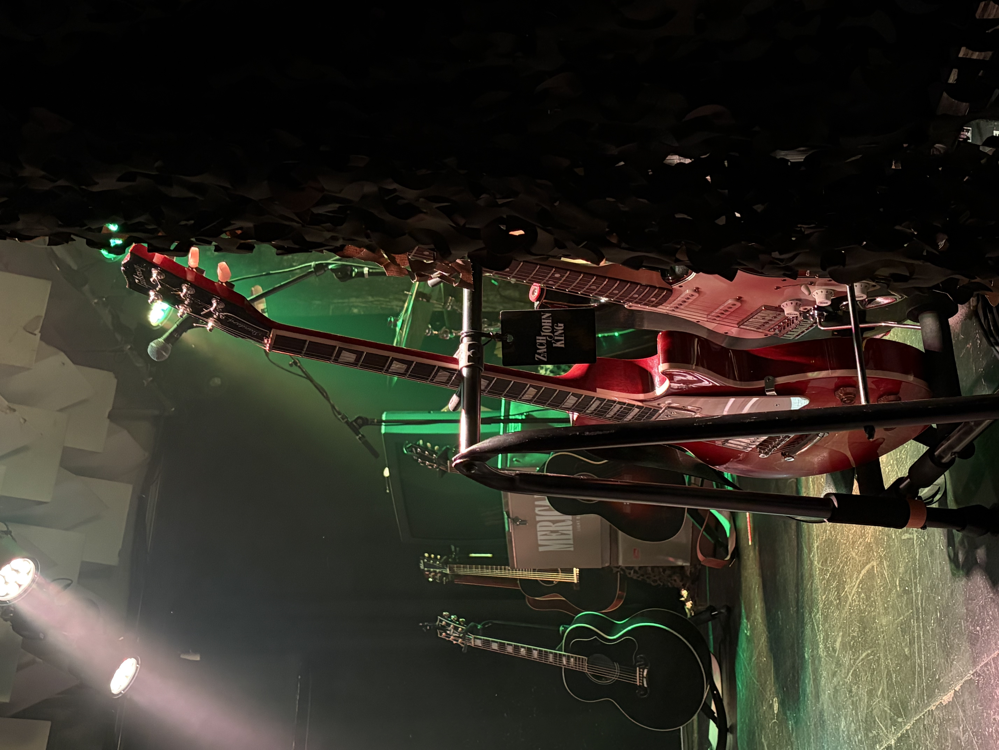
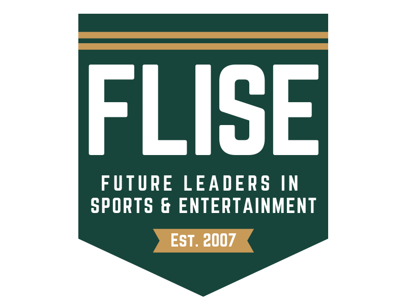
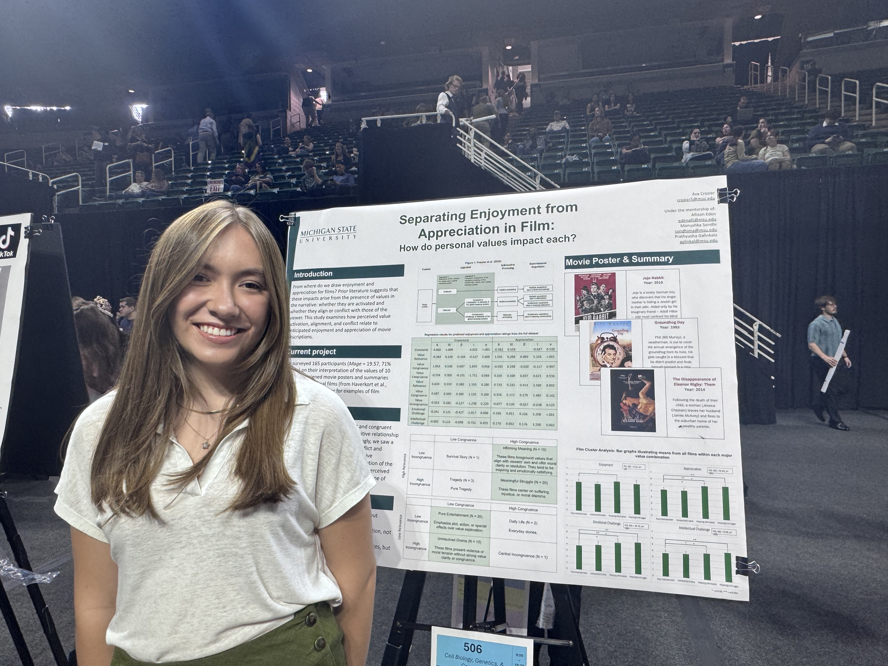
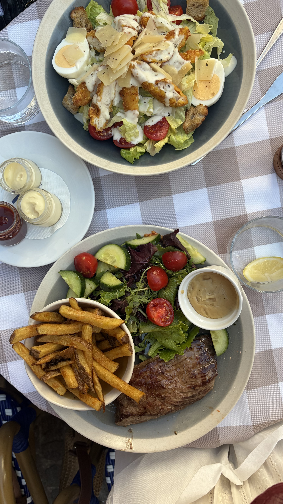

I’m Ava Crozier, and I’m a Business Management & Information Science double major at Michigan State University. I’m passionate about live music, connecting fan communities, and supporting artists through strong leadership and analytics.
In the spring of 2023, I started a concert series hosted in local cafes with goals of providing performance experiences for aspiring musicians, bringing live music into my community, and giving back to youth music programs through fundraising. Over the past three and a half years, we have hosted over 50 concerts and raised over $4,000 for youth music programs including elementary music education and music therapy for students with special needs.
In the second semester of my freshman year at MSU, I founded the Spartan Music Business Club. After recruiting an executive board of my peers, surveying interest through Instagram, and establishing the club through MSU’s Involve@State office, we launched in the fall of 2026 as the only music business-focused organization on campus.

Bi-Monthly Guest Speaker Series

Monthly Live Music and Membership Events

Professional Collaborations, like running the Campus Street Team for Zach John King’s debut album, I’m What You Get
Following its founding in December 2026, I joined Bogue Street Records as a Student Representative and was quickly promoted to the Booking & Live Events Administrator under the A&R team. I oversee event planning and production for our artists, collaborating with our social media and A&R representatives to promote our artists and their music.
I serve as the Events Chair for Future Leaders in Sports and Entertainment, an organization within the Broad College of Business. My role involves planning events like stadium tours, sports game outings, and our inaugural Fall Hayride and Spring Trip for 50+ members.

Research
As a professorial assistant at Michigan State University, I work on a research team under the direction of Dr. Allison Eden in the College of Communication Arts and Sciences. Currently, three of our studies will be presented as top papers at the 2026 National Communication Association Convention and in the early stages of publication.
My presentation at the University Undergraduate Research and Arts Forum (UURAF) on distinguishing enjoyment from appreciation in film gratification was awarded 3rd Place in my division.

Study Abroad
In June 2026, I received the Bruce E. McDonald Education Abroad Scholarship and attended Cannes Lions as an education abroad experience in International Advertising. During my two weeks à la Côte d'Azur, I traveled to Nice, Monaco, Cannes, and Antibes.

Practiced my French language skills while indulging in the local culture & cuisine